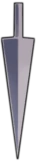
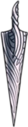

Progressão
Ferrões
Use-o para atacar e recuperar alma
Ferrão Velho
Dano 5

Ferrão Afiado
Dano 9 | Custo 250 Geo
Ferrão Canalizado
Dano 13 | Custo 800 Geo + 1 Minério Pálido

Ferrão Serpenteado
Dano 17 | Custo 2000 Geo + 2 Minérios Pálidos

Ferrão Puro
Dano 21 | Custo 4000 geo + 3 Minérios Pálidos
Habilidades
Foco
Permite recuperar vida em troca de alma

Espírito Vingativo
Permite usar sua alma para disparar um projetil lateral que danifica inimigos

Espírito Uivante
Permite usar sua alma para disparar um projetil vertical que danifica inimigos

Mergulho Desolador
Permite usar sua alma para pousar causando dano e quebrando objetos

Corte Cliclone
Ataque giratório que atinge os inimigos de todos os lados

Corte Impulsionado
Impulso e ataque poderoso que causa 2,5x mais dano

Grande Corte
Ataque enorme que causa 2,5x mais dano

Amuletos

Itens que você pode vestir para melhorar certas habilidades

Danos
| Ferrão Velho | Normal | 5 |
| Amuleto Fúria dos Caídos | 9 | |
| Amuleto Força | 8 | |
| Amuleto Força e Fúria dos Caídos | 14 | |
| Ferrão Afiado | Normal | 9 |
| Amuleto Fúria dos Caídos | 16 | |
| Amuleto Força | 14 | |
| Amuleto Força e Fúria dos Caídos | 24 | |
| Ferrão Canalizado | Normal | 13 |
| Amuleto Fúria dos Caídos | 23 | |
| Amuleto Força | 20 | |
| Amuleto Força e Fúria dos Caídos | 35 | |
| Ferrão Serpenteado | Normal | 17 |
| Amuleto Fúria dos Caídos | 30 | |
| Amuleto Força | 26 | |
| Amuleto Força e Fúria dos Caídos | 46 | |
| Ferrão Puro | Normal | 21 |
| Amuleto Fúria dos Caídos | 37 | |
| Amuleto Força | 32 | |
| Amuleto Força e Fúria dos Caídos | 56 |